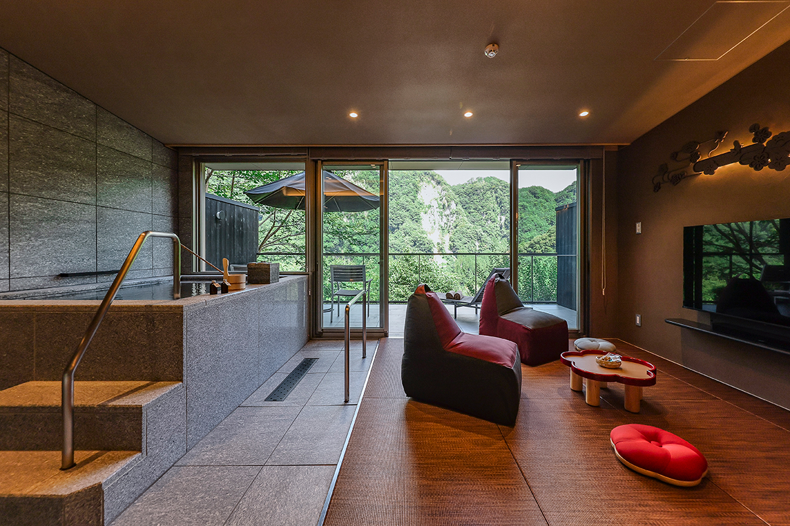
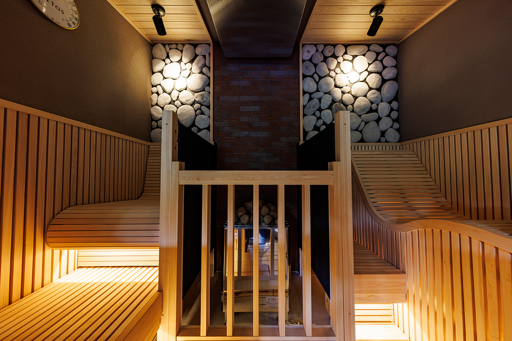
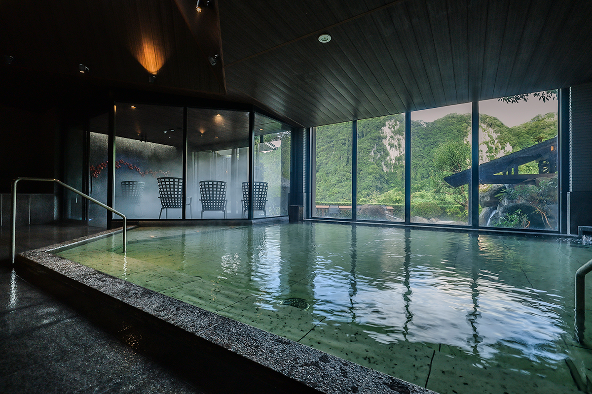
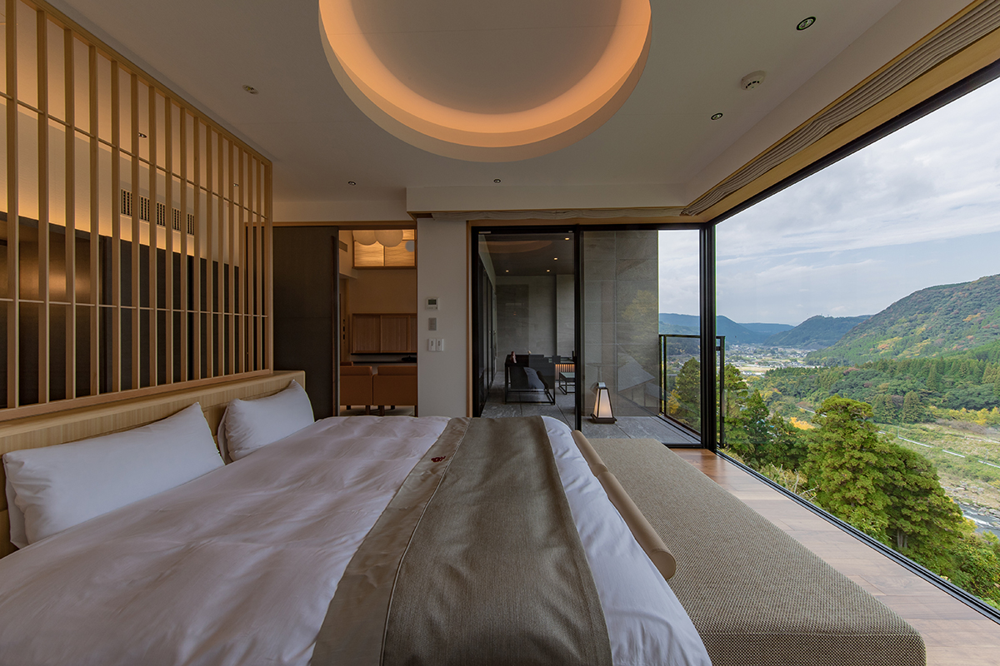
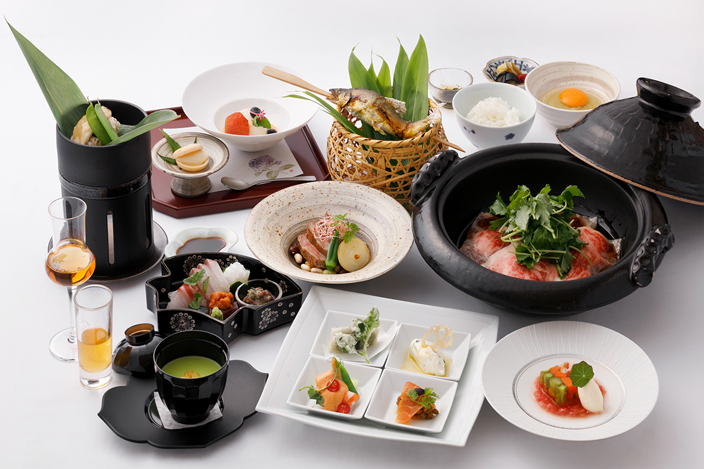
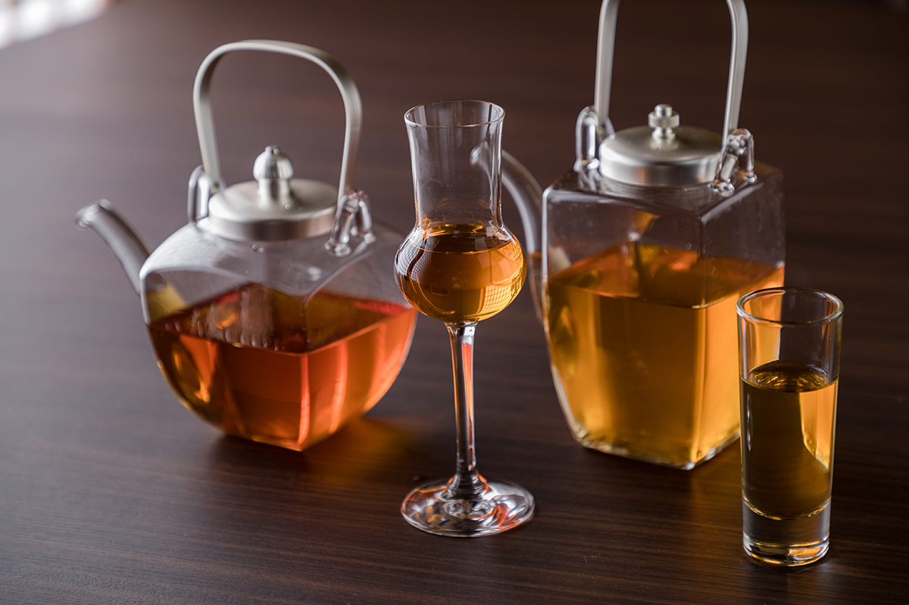

Префектура Оита · Хита · рёкан и сауна
Рёкан Umehibiki в Оку-Хите: частная сауна с видом на скалистое ущелье

Высоко в горах у Хиты стоит рёкан Umehibiki с собственным онсэном. В 2024 году здесь открылся сауна-лаундж, где ущелье за окном на весь день принадлежит только вам.
Сауна
Ущелье на целый день
Рёкан Umehibiki стоит в Ояме, горном районе города Хита на западе префектуры Оита, в окружении леса и скал. Сюда удобно заехать до или после поездки на туристическом поезде «Канпати Итироку», который ходит через Хиту.
В июле 2024 года при рёкане открылся сауна-лаундж: три отдельных номера, каждый из которых гости рёкана могут снять на весь день в дополнение к своему номеру. В каждом есть своя сауна, купель с холодной подземной водой Хиты, гостиная и терраса, так что парятся здесь, ни на кого не оглядываясь.

Главное здесь терраса над ущельем Хибики, где отвесные скалы поднимаются прямо над рекой. Утром долину затягивает туман, и вид напоминает картину тушью. После сауны можно просто сидеть на террасе: слушать птиц, следить за облаками и ветром в деревьях и ни о чём не думать.
Онсэн и номера
Купальни и кедр Хиты
Местной воде приписывают способность снимать усталость. После обновления большой купальни в рёкане есть просторный зал, купальня под открытым небом, ванна, в которой лежат, тёплые каменные лежанки, купальни под замок и сауна с мягкой температурой.

Номера трёх типов: в главном здании, во флигелях и в отдельном корпусе. Везде японский интерьер в современном прочтении и мебель из кедра Хиты.

Стол
Лечебная кухня и сливовое вино
Кухня рёкана строится на идее еды, полезной для души и тела. Меню меняется по сезонам, и в нём много продуктов из окрестностей и со всего Кюсю.

Ояма издавна славится сливами. При рёкане работает своя винодельня, где сливовое вино умэсю ставят в тот же день, когда собирают плоды.

Рёкан Umehibiki
- Адрес
- префектура Оита, Хита, Ояма-мати, Ниси-Ояма, 4587
- Телефон
- +81 973-52-3700
- Номера
- 32
- Цены / Вход
- от 28 200 иен с ужином и завтраком, налог и сервисный сбор включены
- Заезд / выезд
- 15:00 / 11:00
- Как добраться
- около 90 минут на машине от аэропорта Фукуоки; от станции JR Хита около 25 минут на трансфере рёкана (по предварительной записи)
- Сайт
- umehibiki.jp
Фото: Kousaku Kitajima.